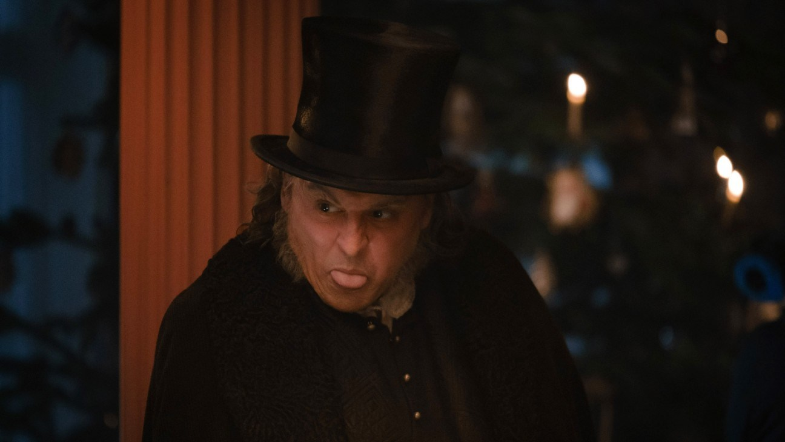
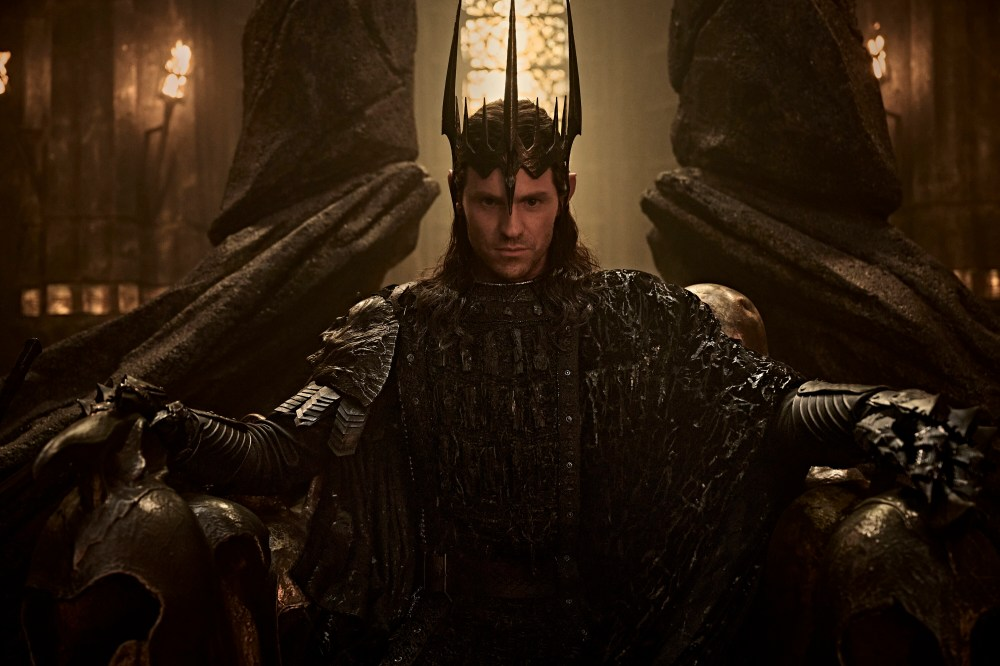
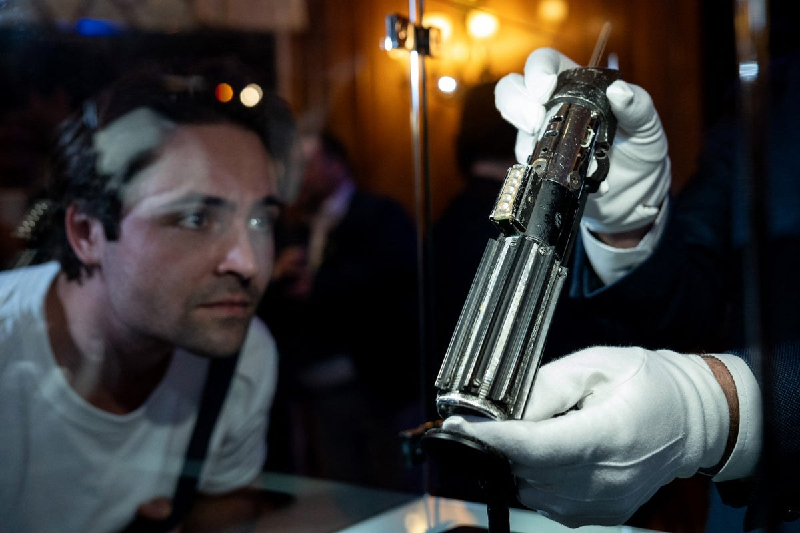

Rosalía makes Latin Grammys history with a third Album of the Year, for Lux
Rosalía opened Thursday’s show in Las Vegas and closed it with Album of the Year for Lux (Complete Works), becoming the first woman to win the category three times, after El Mal Querer and Motomami. She took home five trophies, including Song of the Year and Best Pop Song for “La Perla” with Yahritza y Su Esencia. “To all the people who told me I wasn’t good enough, or that my music was too weird, I’m thankful I didn’t listen,” she said.
The upset came in Record of the Year, which went to 20-year-old Argentine Milo J for “Niño” over Rosalía, Karol G, Jorge Drexler and Carín León. Karol G won Best Urban Music Album for Tropicoqueta. Person of the Year Daddy Yankee tore through “Gasolina” and “Con Calma” with LL Cool J, French Montana and Diljit Dosanjh, the first Indian artist to perform at the show. Édgar Barrera became the most-awarded person in Latin Grammys history, with 30 career wins. BBC notes Lux is also tipped for the main Grammy nominations next week.
 Listen on Spotify →
·
Listen on Spotify →
·
 AP →
·
AP →
·
 Variety (full winners list) →
·
Variety (full winners list) →
·
 BBC News →
BBC News →
Johnny Depp’s Ebenezer opens today as a test of his studio comeback

Ti West’s gothic take on A Christmas Carol opens on Friday the 13th in more than 3,500 North American theaters. It’s Depp’s first major studio movie since 2018’s Fantastic Beasts: The Crimes of Grindelwald, and he’s joined by Ian McKellen, Sam Claflin, Daisy Ridley, Andrea Riseborough, Rupert Grint and Tramell Tillman. Paramount projects about $20 million domestic and another $20 million overseas, enough to likely land at No. 1. The Hollywood Reporter notes a hit could reopen talk of Depp returning to Pirates of the Caribbean.
Reviews are lukewarm, with 50% on Rotten Tomatoes and 48 on Metacritic, and early reactions say it plays more like a horror movie than a family holiday film. The weekend’s other big opener, David Leitch’s heist comedy How to Rob a Bank with Nicholas Hoult, Zoë Kravitz and Pete Davidson, is tracking in the high single digits against a $40 million budget.
Ebenezer official trailer on YouTube → · The Hollywood Reporter →
The Rings of Power season 3 is out, and critics can’t agree whether it finally works

Prime Video dropped the first four episodes Wednesday. The season jumps five years ahead, with Charlie Vickers’s Sauron at war with the Elves as he forges the One Ring, and Jamie Campbell Bower joins the cast. It’s the most expensive series on streaming, and this is its midpoint of a planned five-season run.
Reviews are all over the place. Decider says it’s “finally truly epic” and Nerdist calls it the best season yet, while The Guardian says the revamp is “too little, too late” and RogerEbert.com says it feels like “butter scraped over too much bread.” It sits at 69 on Metacritic, but the user score is only 4.6.
Season 3 official trailer on YouTube →
·
 The Guardian review →
·
The Guardian review →
·
 Variety →
Variety →
Darth Vader’s “I am your father” lightsaber sells for a record $4.875 million

The saber Vader used in The Empire Strikes Back’s Cloud City duel, and again in Return of the Jedi, sold Thursday at Heritage Auctions’ Ultimate Star Wars auction. It had been estimated at just over $1 million.
Heritage says it’s a world auction record for any Star Wars collectible, beating the $3.75 million it got in July for Luke Skywalker’s lightsaber and severed-hand rig. Heritage’s Brian Chanes called it “like the Holy Grail” for collectors. It was one of 27 lightsabers in the sale.
The Empire Strikes Back teaser (no new trailer; the film the saber is from) on YouTube →
·
 The Guardian →
·
The Guardian →
·
 AP →
AP →
Bottom of the news
- Steve Carell and John C. Reilly will star in The Odd Couple on Broadway, directed by Thomas Kail.
- Brad Pitt will star in Connector from Sound of Metal director Darius Marder.
- Steven Spielberg was honored at MoMA’s film benefit, with Martin Scorsese and Tom Cruise on hand.
- Coachella 2027 passes go on sale today at noon PT.
- Godzilla Minus Zero is expected to pull in about $12–17 million in its second weekend.
- Stray Kids are taking their RUN IT tour to North American and European stadiums in 2027, starting in Seattle on May 16.
- Shygirl and Moby released new songs for A24’s Club Kid soundtrack.
- Lang Lang will release all five Beethoven piano concertos on March 5.